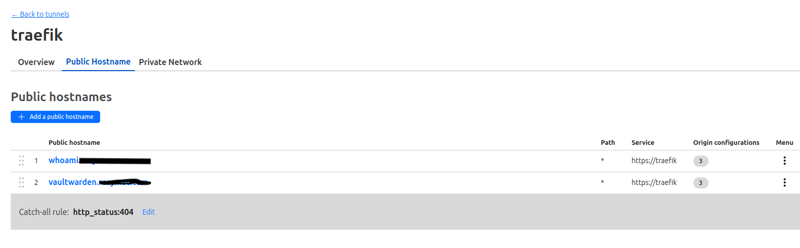
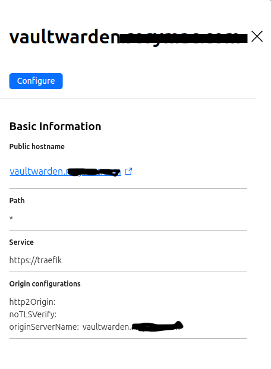
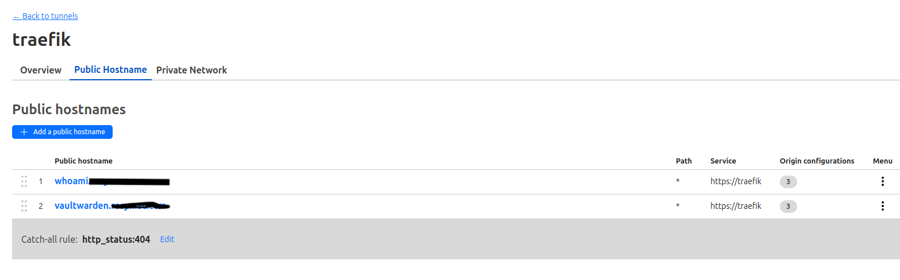
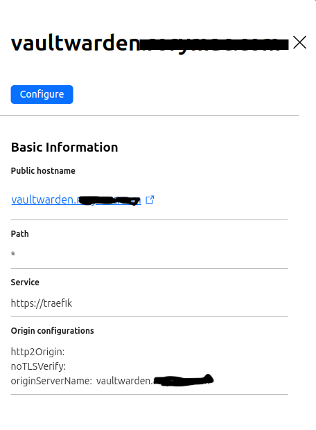

cloudflared + traefik + docker for web-hosting without opened ports¶
Introduction¶
This setup could potentially address scenarios such as serving web content from behind a carier grade NAT (CNAT) or in situations where a public IP isn't available. Surprisingly, the solution requires just one additional component: Cloudflare Tunnels. These tunnels establish a link between my server and Cloudflare without necessitating opened ports. In this blog post, I'll delve into my setup for achieving full encryption between the web service and my users, along with key considerations for similar implementations.
To read more about cloudflared tunnels view here: https://developers.cloudflare.com/cloudflare-one/connections/connect-networks/
Configuration¶
Traefik + cloudflared¶
Cloudflare Tunnels are operated via cloudflared, a software daemon provided by Cloudflare that initiates an outbound connection to the nearest Cloudflare points of presence to proxy internet traffic. As Cloudflare Tunnels offer limited routing functionality, specifically path-based routing, we combine them with the widely used reverse proxy Traefik, which integrates seamlessly with Docker. Cloudflare directs traffic to Traefik, which in turn routes it to individual Docker containers housing the web services we aim to expose.
Below is the docker-compose.yml configuration for Traefik and cloudflared.
networks:
cftunnel-transport:
external: true
cloudflaretunnel:
external: true
services:
tunnel:
container_name: cloudflared-tunnel-traefik
image: cloudflare/cloudflared:2023.10.0-amd64
restart: unless-stopped
command: tunnel run
environment:
- "TUNNEL_TOKEN="
networks:
- cftunnel-transport
traefik:
image: traefik:v2.10.7
container_name: traefik_cloudflare_ingress
restart: always
networks:
- cftunnel-transport
- cloudflaretunnel
volumes:
- /var/run/docker.sock:/var/run/docker.sock:ro
- ./traefik.yml:/traefik.yml:ro
- ./certificates.yml:/certificates.yml:ro
- ./origin-certificates/:/origin-certificates:ro
labels:
- "traefik.enable=true"
- "traefik.http.routers.traefik-ui.rule=Host(`traefik-cf-docker01.internal`)"
- "traefik.http.services.traefik-ui.loadbalancer.server.port=8085"
logging:
driver: fluentd
options:
fluentd-address: 127.0.0.1:24224
fluentd-async: 'true'
tag: docker.cloudflareTraefik
To secure traffic between Traefik and cloudflared, a Cloudflare Origin Certificate is used. This can be generated in the Cloudflare dashboard and the files should be saved as mydomain.tld.pem and mydomain.tld.key into the origin-certificates folder. We will instruct Traefik to secure all TLS traffic with these certificates.
tls:
stores:
default:
defaultCertificate:
certFile: /origin-certificates/rorymac.com.pem
keyFile: /origin-certificates/rorymac.com.key
certificates:
- certFile: /origin-certificates/rorymac.com.pem
keyFile: /origin-certificates/rorymac.com.key
log:
level: DEBUG
entryPoints:
websecure:
address: ":443"
providers:
docker:
endpoint: "unix:///var/run/docker.sock"
exposedByDefault: false
file:
filename: certificates.yaml
Cloudflare setup¶
Login to the cloudflare portal and head over to Zero Trust > Networks > Tunnels
Add a new tunnel and configure the following:
 Add a public host name and configure the following:


Add a public host name and configure the following:


To configure a service in the Cloudflare tunnel, add simply https://traefik as the destination. For Traefik to know which service to route the request to, we also have to specify the origin server name. Since Traefik can also speak HTTP/2, we can enable that as well. Also enable No TLS Verify
Adding a service to the cloudflared / traefik tunnel¶
services:
vaultwarden:
container_name: vaultwarden
hostname: vaultwarden
image: vaultwarden/server:1.30.1
restart: unless-stopped
networks:
cloudflaretunnel:
expose:
- 80 # Web UI
- 443 # Web UI
env_file:
- container-vars.env
volumes:
- /etc/localtime:/etc/localtime:ro
- ./data:/data
labels:
- traefik.enable=true
- traefik.http.routers.vaultwarden.rule=Host(`vaultwarden.rorymac.com`)
- traefik.http.routers.vaultwarden.entrypoints=websecure
- traefik.http.routers.vaultwarden.tls=true
- traefik.http.routers.vaultwarden.service=vaultwarden
- traefik.http.services.vaultwarden.loadbalancer.server.port=80
networks:
cloudflaretunnel:
external: true